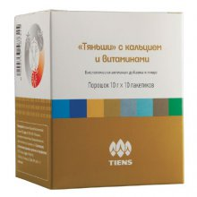
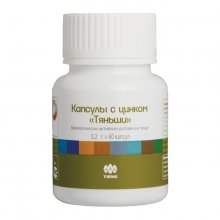
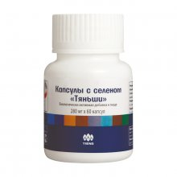
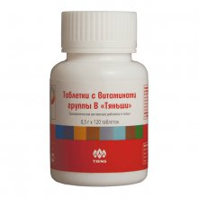
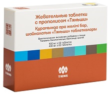

|

«Тяньши» с кальцием и витаминамиДанный продукт разработан специально для людей с повышенным уровнем сахара в крови, соблюдающих диеты, больных сахарным диабетом. Благодаря тыквенному порошку одновременно с восполнением кальция регулируется уровень сахара в крови и баланс питательных веществ. Рекомендована для: Функции: Состав: сухое обезжиренное молоко, порошок костного кальция, полидекстроза, порошок тыквы обыкновенной, изомальтоолигосахарид, какао порошок, аспартам, витамины C, В1, В2, А, D3. Дозировка: взрослым по 1 пакетику (10 г) 2 раза в день во время еды, запивая водой или смешивая с пищей. Противопоказания: индивидуальная непереносимость компонентов, гиперкальциемия, фенилкетонурия. Не является лекарственным средством. Упаковка: 10 г × 10 пакетиков. |
|

Капсулы с цинком «Тяньши»Цинк – важный микроэлемент, в котором особенно нуждаются дети, т.к. он регулирует рост человека, влияет на умственное и физическое развитие. Дефицит цинка может вызвать потерю аппетита, ухудшение зрения, потерю волос и различные кожные заболевания. У мужчин нехватка цинка приводит к снижению секреторной функции яичек, полового влечения, ослаблению эрекции. Недостаток цинка снижает обонятельную и вкусовую чувствительность, ра ботоспособность, защитные функции организма. Рекомендована для: Функции: Состав: глюкоза, порошок яичного белка, лактат цинка. Дозировка: детям от 5 до 10 лет по 1–2 капсулы 2 раза в день, детям старше 10 лет и взрослым по 3–4 капсулы 2 раза в день во время еды. Противопоказания: индивидуальная непереносимость компонентов. Не является лекарственным средством. Упаковка: 0,2 г × 60 капсул. |
|

Капсулы с селеном «Тяньши»Селен обладает антиоксидантным действием, является основным строительным компонентом в создании фермента глутатионпероксидазы – одного из самых важных элементов нашего организма, который нейтрализует свободные радикалы и предохраняет организм от преждевременного Рекомендована для: Функции: Состав: эритрит, желатинированный крахмал, каррагинан селена. Дозировка: взрослым по 2 капсулы 1 раз в день во время еды. Противопоказания: индивидуальная непереносимость компонентов. Не следует превышать рекомендуемую дозировку или одновременно принимать аналогичные средства. Не является лекарственным средством. Упаковка: 0,28 г × 60 капсул. |
|

Таблетки с витаминами группы В «Тяньши»Витамины группы В участвуют в высвобождении энергии, необходимой для нормальной деятельности нервной системы, повышают умственную и физическую работоспособность в период межсезонья, после перенесенных заболеваний, помогают поддерживать нормальное функционирование пищеварительного тракта. Рекомендована для: Функции: Состав: прежелатинизированный крахмал, микрокристаллическая целлюлоза, натрий карбоксиметилкрахмал, витамин В3, гидроксипропил метилцеллюлоза, витамин В5, диоксид титана, стеарат магния, витамины В1, В2, В6, краситель тартразин, витамины В9, В12. Дозировка: взрослым по 2 таблетки 1 раз в день во время еды. Противопоказания: индивидуальная непереносимость компонентов, беременность, кормление грудью. Не является лекарственным средством. Упаковка: 0,5 г × 120 таблеток. |
Биологически активные добавки «Тяньши»Основные принципы китайской медицины – это поддержание равновесия и баланса в организме человека, предупреждение заболеваний. Достигается это благодаря сочетанию таких подходов, как очищение, регуляция, питание. Очищение организма – это первый шаг к укреплению нашего здоровья. После очистки органов пищеварения, кровоснабжения, дыхания, выделительной системы от шлаков и токсинов организм человека станет работать без перебоев. Улучшается циркуляция крови, повышается энергообмен, появляются ресурсы для противодействия хроническим заболеваниям. Регуляция – это устранение дефицита макрои микроэлементов, витаминов, аминокислот, полиненасыщенных жирных кислот (ПНЖК) и других важных нутриентов с учетом физиологических потребностей организма, восстановление нормального метаболизма (обмена) и функциональной работоспособности каждого органа и системы. Рекомендована для: Функции: Состав: изомальтоолигосахарид, сухое обезжиренное молоко, порошок костного кальция, порошок растительного жира, какао порошок, мальтодекстрин, аспартам, ванилин, витамины С, А, D3. Дозировка: взрослым по 1 пакетику (10 г) 2 раза в день во время еды, запивая водой или смешивая с пищей. Противопоказания: индивидуальная непереносимость компонентов, гиперкальциемия, фенилкетонурия. Не является лекарственным средством. Упаковка: 10 г × 10 пакетиков. |
|

Жевательные таблетки с прополисом «Тяньши»Все новое – это хорошо забытое старое. Предлагаем вашему вниманию всеми любимый продукт в линейке «Тяньши» – «Жевательные таблетки с прополисом «Тяньши». Благодаря натуральному составу и уникальным свойствам компонентов эта биологически активная добавка оказывает общеукрепляющий эффект на организм человека. Рекомендована для: Функции:
Страницы: Copyright © 2017 Клепиков Антон |